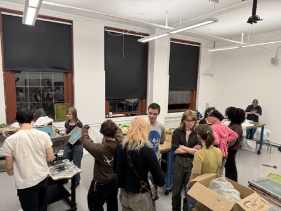
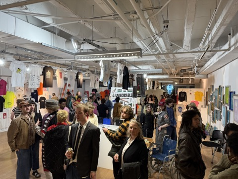
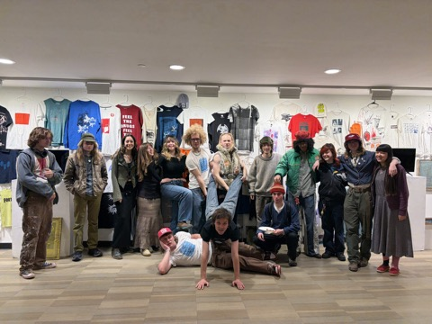
Garment Printing Club↗


Garment Printing Club↗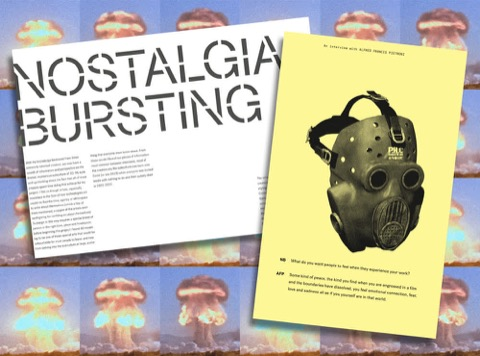
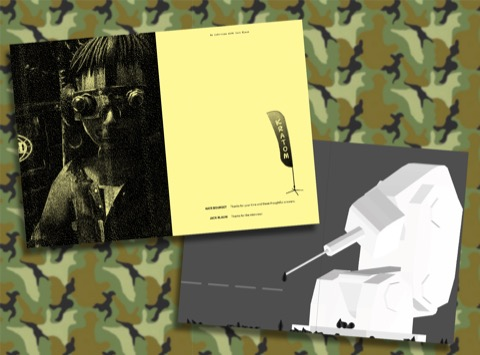
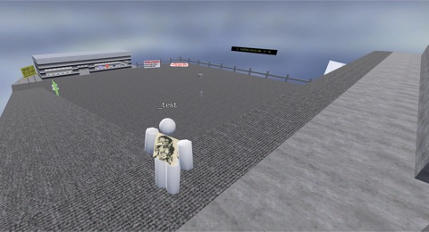
The Limit↗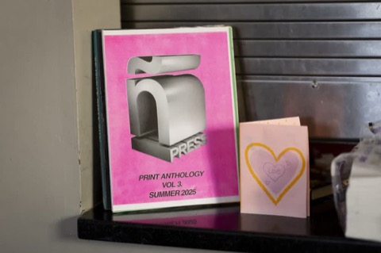
ñ press↗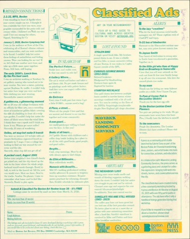
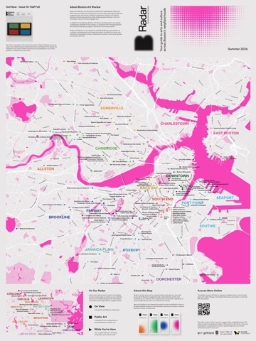
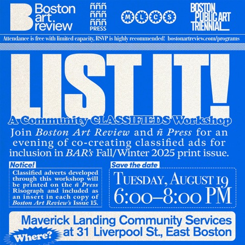
Boston Art Review↗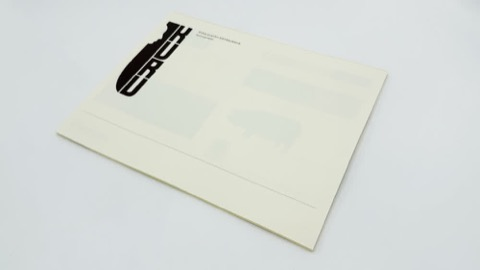
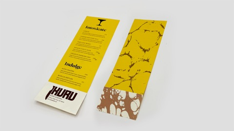
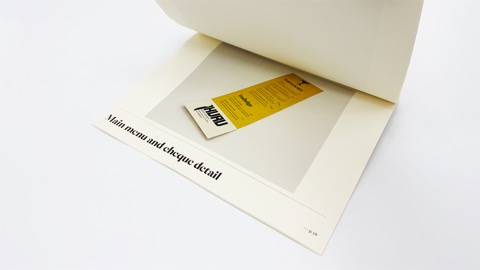
KURU Fine Dining↗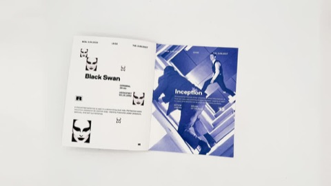
ReRun Film Festival↗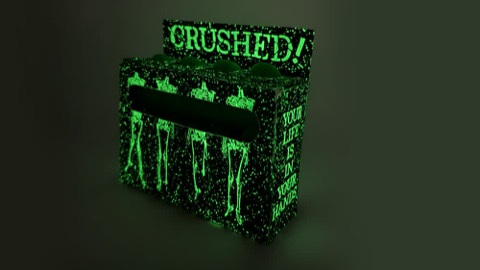
CRUSHED! Bike grips↗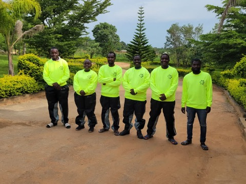
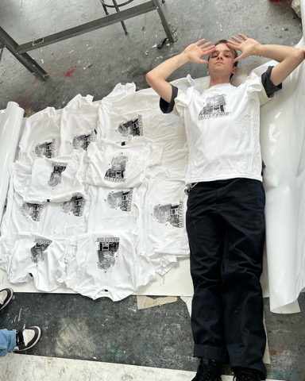
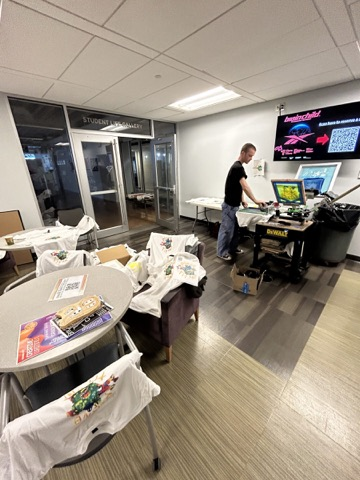
Community Involvement↗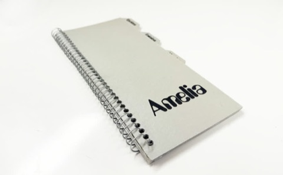
Amelia Zine↗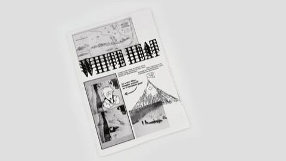
White Heat↗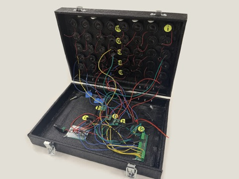
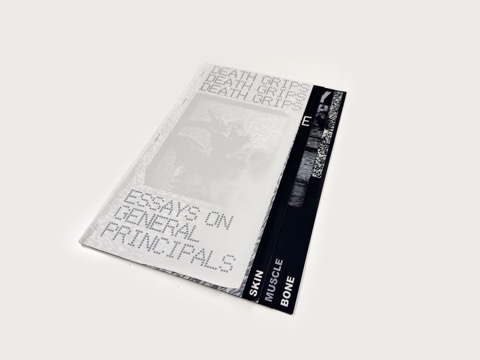
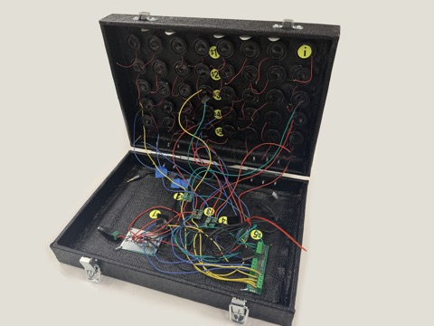
Speakerwall Box↗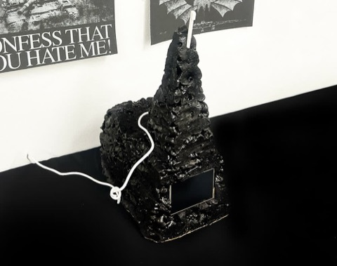
Data Chapel↗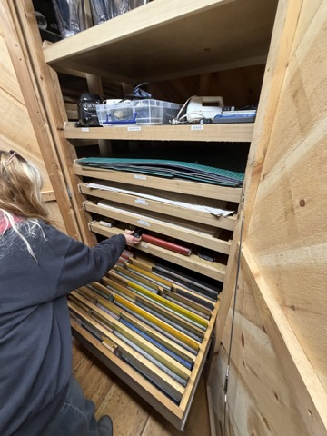
Haystack Mountain School of Crafts↗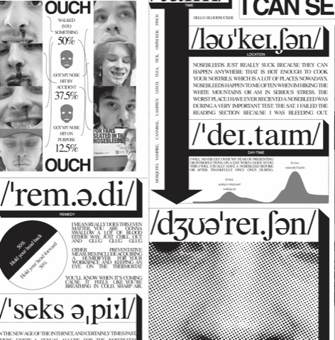
Nosebleed Poster↗